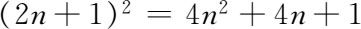

10．亚里士多德及其学派
亚里士多德（公元前384—前322）生于马其顿的一个城市史太其拉（Stageira）。他是柏拉图的学生和同事，相处二十年之久，并从公元前343年到前340年当亚历山大大帝的老师。公元前335年他成立了自己的学派学园学派。学园里有个花园、一个课堂和一所艺神（Muses）的祭坛。
亚里士多德的著作涉及机械学（力学）、物理学、数学、逻辑、气象学、植物学、心理学、动物学、伦理学、文学、形而上学、经济学和其他许多领域。他没有专门写一本关于数学的书，但在许多地方讨论过数学，并用数学说明他的一些观点。
他认为科学可分三类：理论性的、生产性的和实务性的。理论性科学是探求真理的，包括数学、物理学（光学和声学以及天文学）以及形而上学，其中数学是最精确的科学；生产性科学是各项工艺；而实务性科学，例如伦理学和政治学，则是为了摆正人的行为动作。在理论科学中，逻辑是其中各门科学的先行学科，而形而上学家则要讨论并解释数学家和自然哲学家（科学家）认为是不言而喻的东西，例如研究对象的存在性或真实性问题以及公理的本性问题。
亚里士多德虽在发现新的数学结果上没有重要贡献（欧几里得书中有几个定理是属于他的），但他对数学的本性及其与物理世界的关系所发表的看法却影响很大。柏拉图相信有一个独立、永恒的观念世界，认为它就是宇宙的真实存在，而数学概念是这世界中的一部分东西；亚里士多德则不然，他把具体物质看成是更为可取的。不过他也有重视观念之处，例如，他认为物理对象有其一些普遍性的本质，诸如硬、软、重、轻、球状性、冷和暖。数及几何形状也是实物的属性；它们是通过抽象思维为人所认识的，但它们是从属于实物的。所以数学是研究抽象概念的，而抽象概念则来自实物的属性。
亚里士多德讨论定义。他对定义的想法是合乎现代精神的；他说定义只不过是给一批文字定个名。他又指出定义必须用先存在于所定义事项的某种东西来表述。因此他批评“点是没有部分的那种东西”这一定义，认为“那种东西”这几个字没有说出所指的究竟是什么，除非所指的可能就是“点”，因而这定义并不合适。他承认未经定义的名词是需要的，因为在一系列的定义里总得有个开头，但其后的数学家漠视这一需要，直到19世纪末。
他又指出（据普卢塔赫说柏拉图较早指出过）一个定义只能告诉我们一件事物是什么，并不说明它一定存在。定义了的东西是否存在有待于证明，除非是少数几个第一性的东西诸如点和直线，它们的存在是同公理（第一性原理）一起事先为人们所接受的。例如我们可以定义一个正方形，而这种图形可能不存在；就是说，定义中所要求的诸属性可能无法并存。莱布尼茨（Gottfried Wilhelm Leibniz）就举出过正十面体这样一个例子；我们可以定义这样一个图形，但它并不存在。如果有人并未意识到这图形不存在就着手去证明有关这图形的定理，那他得出的结果将是胡说一气。亚里士多德和欧几里得所采取的用以证明存在性的方法是构造（construction）。欧几里得《原本》中头三个公理承认直线和圆的构造；所有其他数学概念则必须构造出来以证明其存在，例如角的三等分线虽可定义，但不能用直线和圆构造出来，所以在希腊几何学里不能加以考虑。
亚里士多德也讨论数学的基本原理。他把公理和公设加以区别，认为公理是一切科学所公有的真理，而公设则只是为某一门科学所接受的第一性原理。他把逻辑原理（诸如矛盾律、排中律、等量加减等量后结果相等的公理以及其他这类原理）都列为公理。公设无需是不言自明的，但其是否属真应受所推出结果的检验。所列出的一批公理或公设，数目应该愈少愈好，只要它们能用以证明所有结果。虽然欧几里得也采用亚里士多德之说，把公理和公设区别开来（从下章可知），但直到19世纪末为止的所有数学家都漠视这一区别，把公理和公设都当作是同样不言自明的。亚里士多德认为公理是从观察实物（物理对象）得出的。它们是直接为人们所理解的一般性认识。亚里士多德和他的门人给出了许多定义和公理，或是改进了前人的这些东西。亚里士多德的有些定义和公理是被欧几里得所采纳的。
亚里士多德讨论了怎样能把点同线联系起来这个基本问题。他说点不可分，然而占有位置。但那样的话，不论聚集起多少点来，还总是聚不成能分的东西，而线段则肯定是能分的量。因此点不能形成像线这类连续的东西，因为点与点不能自己连续在一起。他说一点好比是时间中的“此刻”（现在）。此刻不可分，因而并非时间的一部分。一点可能是一线的末端、开端或其上的分界处，但它不能是线的一部分，也不成其为量。一点只有通过运动才能产生一线从而成其为量的本原。他又论证说点没有长度，因此若一线由点组成，它将没有长度。同样，如果时间由瞬刻组成，那就没有整个的时段了。关于线所具有的连续性，他是这样定义的：如果一件东西的任何两个相继部分在其接触处的两个界限合而为一，这东西就是连续的。实际上亚里士多德讲过许多次关于连续量的话，讲法都不一致。但他那个主张的实质是：点和数是离散量，必须同几何上的连续量区别开来。在算术上没有连续集合（连续统）。至于就两门学科的关系来说，他认为算术（即数论）是更准确的，因为数比几何概念更易于抽象化。他又认为算术要先行于几何，因为在考察三角形之前先需要有三这个数。
在讨论到无穷（大）这个概念的问题时，他提出要把潜在的无穷（大）和真实的无穷（大）加以区别（这在今日有重要意义）。地球如果有个突然的开始，那么它的年龄是潜在无穷（大），但在任何一刻都不是真实无穷（大）。亚里士多德认为只存在潜在的无穷（大）。他承认正整数是潜在无穷的，因给任何数加上1后总能得一新数，但无穷集合这类集合是不存在的。其次，大多数的量甚至不能是潜在无穷的，因它们若不断增加，就会超出宇宙范围。但空间是潜在无穷的，因它能反复往下细分，而时间则在两个方向上都是潜在无穷的。
亚里士多德的一个重大贡献是创立逻辑学。希腊人在研究出正确的数学推理规律时就已奠定了逻辑的基础，但要等到有亚里士多德这样的学者才能把这些规律典范化和系统化，使之形成一门独立学科。从亚里士多德的著作中，可以十分清楚地看出，他是从数学得出逻辑来的。他的基本逻辑原理——矛盾律，指出一个命题不能既是真的又是假的；排中律，指出一个命题必然是真的或者是假的——就是数学里间接证法的核心。亚里士多德用当时课本中的数学例子来说明他的推理原则。亚里士多德的逻辑一直到19世纪无人能挑出它的毛病。
逻辑这门科学虽来自数学，但其后却被人们认为是独立于并且先行于数学的，而且能应用于一切推理过程。如前所述，甚至亚里士多德自己也认为逻辑先行于科学和哲学。在数学里他强调演绎证明，认为这是确定事实的唯一基础。就柏拉图而论，他相信数学真理早先存在于或独立于物质的世界，故认为推理不足以保证定理正确；他认为逻辑的作用是第二位的。逻辑无非是把我们已知其为真的命题明白说出来罢了。
亚里士多德学派中有一人特别值得一提，这就是罗得斯的欧德摩斯。此人生活于公元前4世纪后期，是为普罗克洛斯和辛普利修斯所引述过的那本书（欧德摩斯的总结）的作者。前面指出过，欧德摩斯写过算术、几何及天文学方面的历史。他是有案可查的第一位科学史家。但更重要的一点是，只有当一门科学在他那个时代的知识足够丰富广博，才值得为之写出历史。
本书所要提到的古典时期那些人里的最后一人是皮坦尼（Pitane）的奥托吕科斯（Autolycus），他是个天文学家兼几何学家，生活于公元前310年前后。他不是柏拉图或亚里士多德学派的人，虽然他曾教过柏拉图之后的一位学派领袖。他所写的三本书中，有两本流传到今天；这是保存完整的最早的希腊书，虽然流传下来的只是奥托吕科斯原书的抄写手稿。这两本书的书名叫《论运动的球》（On the Moving Sphere）和《论升和落》（On Risings and Settings），其后被人编入《小天文》（Little Astronomy）文集中［以别于日后托勒玫的《大汇编》（Great Collection或Almagest）］。《论运动的球》中研究了球面上的子午圈、一般的大圆，以及我们今日称之为纬度线的圆，并论述一远处光源照到一旋转球上（如同太阳照射地球那样）时的受光区域与黑暗区域。书中内容需要一些球面几何的定理，由此可以知道这些定理必是当时希腊人已经知道的。奥托吕科斯的第二本书谈恒星的升和落，是关于观测天文学方面的著作。
《论运动的球》那本书的形式是很有意义的。图上的点是用字母来代表的。命题是按逻辑次序排列的。每个命题先作一般性的陈述，然后再重复，但重复陈述时明确参照附图，到最后给出证明。这是欧几里得著述中所采用的风格。
参考书目
Apostle，H．G．：Aristotle's Philosophy of Mathematics，University of Chicago Press，1952．
Ball，W．W．Rouse：A Short Account of the History of Mathematics，Dover（reprint），1960，Chaps．2-3．
Boyer，Carl B．：A History of Mathematics，John Wiley and Sons，1968，Chaps．4-6．
Brumbaugh，Robert S．：Plato's Mathematical Imagination，Indiana University Press，1954．
Gomperz，Theodor：Greek Thinkers，4 vols．，John Murray，1920．
Guthrie，W．K．C．：A History of Greek Philosophy，Cambridge University Press，1962 and 1965，Vols．1 and 2．
Hamilton，Edith：The Greek Way to Western Civilization，New American Library，1948．
Heath，Thomas L．：A History of Greek Mathematics，Oxford University Press，1921，Vol．1．
Heath，Thomas L．：A Manual of Greek Mathematics，Dover（reprint），1963，Chaps．4-9．
Heath，Thomas L．：Mathematics in Aristotle，Oxford University Press，1949．
Jaeger，Werner：Paideia，3 vols．，Oxford University Press，1939-1944．
Lasserre François：The Birth of Mathematics in the Age of Plato，American Research Council，1964．
Maziarz，Edward A．，and Thomas Greenwood：Greek Mathematical Philosophy，F． Unger，1968．
Sarton，George：A History of Science，Harvard University Press，1952，Vol．1，Chaps．7，11，16，17，and 20．
Scott，J．F．：A History of Mathematics，Taylor and Francis，1958，Chap．2．
Smith，David Eugene：History of Mathematics，Dover（reprint），1958，Vol．1，Chap．3．
van der Waerden，B．L．：Science Awakening，P．Noordhoff，1954，Chaps．4-6．
Wedberg，Anders：Plato's Philosophy of Mathematics，Almqvist and Wiksell，1955．
————————————————————
(1) 《形而上学》（Metaphys）卷Ⅰ，986a及986a21，Loeb经典图书版。
(2) 任一奇整数可表为2n＋1，于是

，这必然是奇数。(3) “尺规”两字是按习惯说法译的，这里的“尺”实际应是“直边”，应理解为没有刻度的尺。——译者注
(4) 点G不能直接根据曲线的定义求得，因AB与BC在同一顷刻到达AD处，故旋转线和水平线在那里没有交点。不过只要把G看作割圆曲线上较早形成的一些点的极限就能定出G。用微积分法可得AG＝2a/π，此处a＝AB。
(5) 乔伊特（B．Jowett）《柏拉图的对话》第Ⅶ篇，525节，Clarendon Press版，1953，共2卷（原文为卷2，疑误）。
(6) 《理想国》第Ⅵ篇，510节。
(7) 第Ⅵ篇，510节。